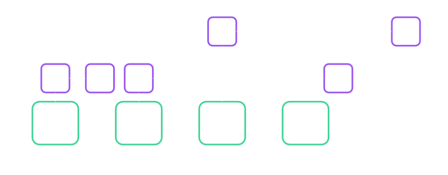

<!DOCTYPE html>
<html lang="en">

<head>
  <meta charset="utf-8" />
  <meta name="viewport" content="width=device-width, initial-scale=1.0, maximum-scale=1.0, user-scalable=no" />

  <title>FRAME/Pallet Hooks</title>
  <link rel="icon" href="./../../assets/favicon.svg" />
  <link rel="shortcut icon" href="./../../assets/favicon.png" />
  <link rel="stylesheet" href="./../../dist/reset.css" />
  <link rel="stylesheet" href="./../../dist/reveal.css" />
  <link rel="stylesheet" href="./../.././assets/styles/PBA-theme.css" id="theme" />
  <link rel="stylesheet" href="./../../css/highlight/shades-of-purple.css" />

  <link rel="stylesheet" href="./../.././assets/styles/custom-classes.css" />

</head>

<body class="site">
  <footer style="position: fixed; top: 1.5%; left: 2%; z-index: 99;">
    <a href="">
      
    </a>
  </footer>
  <main class="reveal">
    <article class="slides">
      <section  data-markdown><script type="text/template">

<!-- .slide: data-background-image="../../assets/img/0-Shared/bg/PBA_Background.png" data-background-size="cover" -->

# 🪝 FRAME/Pallet Hooks 🪝

You can not only execute logic in calls, but also regularly on block events.

<aside class="notes"><p>One of the distinctions from contracts that always need to be called.</p>
</aside></script></section><section ><section data-markdown><script type="text/template">
## Hooks: All In One

- Onchain / STF
  - `on_runtime_upgrade`
  - `on_initialize`
  - `on_poll`
  - `on_idle`
  - `on_finalize`
- Offchain:
  - `genesis_build`
  - `offchain_worker`
  - `integrity_test`
  - `try_state`

<aside class="notes"><p><a href="https://paritytech.github.io/substrate/master/frame_support/traits/trait.Hooks.html">https://paritytech.github.io/substrate/master/frame_support/traits/trait.Hooks.html</a></p>
</aside></script></section><section data-markdown><script type="text/template">
### Hooks: All In One

```rust
#[pallet::hooks]
impl<T: Config> Hooks<BlockNumberFor<T>> for Pallet<T> {
  fn on_runtime_upgrade() -> Weight {}
  fn on_initialize(_n: BlockNumberFor<T>) -> Weight {}
  fn on_finalize(_n: BlockNumberFor<T>) {}
  fn on_idle(_n: BlockNumberFor<T>, remaining_weight: Weight) -> Weight {}
  fn on_poll(_n: BlockNumberFor<T>, _weight: &mut WeightMeter) {}
  fn offchain_worker(_n: BlockNumberFor<T>) {}
  fn integrity_test() {}
  #[cfg(feature = "try-runtime")]
  fn try_state(_n: BlockNumberFor<T>) -> Result<(), TryRuntimeError> {}
}

#[pallet::genesis_build]
impl<T: Config> BuildGenesisConfig for GenesisConfig<T> {
	fn build(&self) {}
}
```

<aside class="notes"><p>Many of these functions receive the block number as an argument, but that can easily be fetched from
<code>frame_system::Pallet::&lt;T&gt;::block_number()</code></p>
</aside></script></section></section><section  data-markdown><script type="text/template">
## Hooks: `on_runtime_upgrade`

- Called every time the `spec_version`/`spec_name` is bumped.
- Why might you be interested in implementing this?
  - &shy;<!-- .element: class="fragment" --> **State Migration**, see dedicated lecture
- &shy;<!-- .element: class="fragment" --> _Note_: Called before `on_initialize`, so the state might be subtly different from an extrinsic.

<aside class="notes"><p>Because very often runtime upgrades need to be accompanied by some kind of state migration.
Has its own lecture, more over there.</p>
</aside></script></section><section ><section data-markdown><script type="text/template">
## Hooks: `on_initialize`

- Useful for any kind of **automatic** and **necessary** operation.
- The weight you return is interpreted as `DispatchClass::Mandatory`.
</script></section><section data-markdown><script type="text/template">
### Hooks: `on_initialize`

- `Mandatory` Hooks should really be lightweight and predictable, with a bounded complexity.

```rust
fn on_initialize(_n: BlockNumberFor<T>) -> Weight {
  // any user can create one entry in `MyMap` 😱🔫.
  <MyMap<T>>::iter().for_each(do_stuff);
}
```

<!-- .element: class="fragment" -->
</script></section><section data-markdown><script type="text/template">
### Hooks: `on_initialize`

- &shy;<!-- .element: class="fragment" --> Question: If you have 3 pallets, in which order are their `on_initialize` hooks called?
- &shy;<!-- .element: class="fragment" --> Question: If your runtime panics `on_initialize`, how can you recover from it?
- &shy;<!-- .element: class="fragment" --> Question: If your `on_initialize` consumes more than the maximum block weight?

<aside class="notes"><ul>
<li>The order comes from the <code>#[runtime::pallet_index]</code> numbering in the runtime.</li>
<li>Panic in mandatory hooks is a fatal error. You are pretty much done. Most likely need to fork the chain.</li>
<li>Overweight blocks using mandatory hooks are possible, ONLY in the context of solo-chains. Such a
block will take longer to produce, but it eventually will. If you have your eyes set on being a
parachain developer, you should treat overweight blocks as fatal as well.</li>
</ul>
</aside></script></section></section><section  data-markdown><script type="text/template">
## Hooks: `on_poll`

```rust
fn on_poll(_n: BlockNumber, _weight: &mut WeightMeter)
```

- The non-mandatory version of `on_initialize`, i.e. it is not guaranteed to execute every block.
- Runs after inherents.
- Comes with a weight meter that needs to be adhered to. More on weights in the dedicated lecture.

<aside class="notes"><p>See <a href="https://github.com/paritytech/substrate/pull/14279">https://github.com/paritytech/substrate/pull/14279</a> , <a href="https://github.com/paritytech/polkadot-sdk/pull/1781">https://github.com/paritytech/polkadot-sdk/pull/1781</a> and related PRs</p>
</aside></script></section><section ><section data-markdown><script type="text/template">
## Hooks: `on_finalize`

- Extension of `on_initialize`, but at the end of the block.
- Its weight needs to be known in advance. Therefore, less preferred compared to `on_initialize`.

```rust
fn on_finalize(_n: BlockNumberFor<T>) {} // ✅
fn on_finalize(_n: BlockNumberFor<T>) -> Weight {} // ❌
```

<!-- .element: class="fragment" -->

- Nothing to do with _finality_ in the consensus context.

<!-- .element: class="fragment" -->
</script></section><section data-markdown><script type="text/template">
### Hooks: `on_finalize`

> Generally, avoid using it unless something REALLY needs to happen at the end of the block.

&shy;<!-- .element: class="fragment" --> _Tip_: Sometimes, rather than thinking "at the end of block N", consider writing code "at the beginning of block N+1".

<aside class="notes"><p>Sometimes, rather than thinking &quot;at the end of block N&quot;, consider writing code &quot;at the beginning of block N+1&quot;</p>
</aside></script></section></section><section ><section data-markdown><script type="text/template">
## Hooks: `on_idle`

- **_Optional_** variant of `on_finalize`, also executed at the end of the block, that uses left-over weight.
- Small semantic difference: executes pallets' hooks randomly, rather than in pallet index order, and only
  if there is weight left.
</script></section><section data-markdown><script type="text/template">
## Best Practice: Prefer Non-Mandatory Hooks

- Prefer `on_poll` over `on_initialize`
- Prefer `on_idle` over `on_finalize`
- Use multi-block migrations for large state changes
- Use optional service work via extrinsics where possible
</script></section></section><section  data-markdown><script type="text/template">
## Recap: Onchain/STF Hooks

<diagram class="mermaid">
%%{init: {'theme': 'dark', 'themeVariables': { 'darkMode': true }}}%%
graph LR
    subgraph AfterTransactions
        direction LR
        OnIdle --> OnFinalize
    end

    subgraph OnChain
        direction LR
        Optional --> BeforeExtrinsics
        BeforeExtrinsics --> Inherents
        Inherents --> Poll
        Poll --> Transactions
        Transactions --> AfterTransactions
    end

    subgraph Optional

OnRuntimeUpgrade
end

    subgraph BeforeExtrinsics
        OnInitialize
    end

    subgraph Transactions
        Transaction1 --> UnsignedTransaction2 --> Transaction3
    end

    subgraph Inherents
        Inherent1 --> Inherent2
    end

</diagram>

<aside class="notes"><p>Inherents are always applied first, before user transactions.</p>
</aside></script></section><section ><section data-markdown><script type="text/template">
## Hooks: `genesis_build`

- Means for each pallet to specify a $f(input): state$ at genesis.
- This is called only once, by the client, when you **create a new chain**.
  - &shy;<!-- .element: class="fragment" --> Is this invoked every time you run `cargo run`?
- `#[pallet::genesis_build]`.
</script></section><section data-markdown><script type="text/template">
### Hooks: `genesis_build`

```rust
#[pallet::genesis_config]
pub struct GenesisConfig<T: Config> {
  pub foo: Option<u32>,
  pub bar: Vec<u8>,
}
```

<!-- .element: class="fragment" -->

```rust
impl<T: Config> Default for GenesisConfig<T> {
  fn default() -> Self {
    // snip
  }
}
```

<!-- .element: class="fragment" -->

```rust
#[pallet::genesis_build]
impl<T: Config> BuildGenesisConfig for GenesisConfig<T> {
  fn build(&self) {
    // use self.foo, self.bar etc.
  }
}
```

<!-- .element: class="fragment" -->
</script></section><section data-markdown><script type="text/template">
### Hooks: `genesis_build`

- `GenesisConfig` is a composite/amalgamated item at the top level runtime.

```rust
#[frame_support::runtime]
mod runtime {
  #[runtime::runtime]
  pub struct Runtime;

  #[runtime::pallet_index(0)]
  pub type System = frame_system;
  #[runtime::pallet_index(1)]
  pub type Balances = pallet_balances;
}
```

```rust
struct RuntimeGenesisConfig {
  SystemConfig: pallet_system::GenesisConfig,
  PalletAConfig: pallet_a::GenesisConfig,
}
```

<!-- .element: class="fragment" -->

<aside class="notes"><p><a href="https://paritytech.github.io/substrate/master/node_template_runtime/struct.RuntimeGenesisConfig.html">https://paritytech.github.io/substrate/master/node_template_runtime/struct.RuntimeGenesisConfig.html</a></p>
</aside></script></section><section data-markdown><script type="text/template">
### Hooks: `genesis_build`

- `genesis_build` is now invoked via a runtime API, not the native runtime.
- `#[cfg(feature = "std")]` guards in pallets are no longer needed for genesis.

<aside class="notes"><p><a href="https://github.com/paritytech/substrate/issues/13334">https://github.com/paritytech/substrate/issues/13334</a></p>
</aside></script></section></section><section ><section data-markdown><script type="text/template">
## Hooks: `offchain_worker`

**Fully offchain application**:

- Read chain state via RPC.
- Submit desired side effects back to the chain as transactions.

**Runtime Offchain Worker**:

- &shy;<!-- .element: class="fragment" --> Code lives onchain, upgradable only in synchrony with the whole runtime 👎
- &shy;<!-- .element: class="fragment" --> Ergonomic and fast state access 👍
- &shy;<!-- .element: class="fragment" --> State writes are ignored 🤷
- &shy;<!-- .element: class="fragment" --> Can submit transactions back to the chain as well ✅
- &shy;<!-- .element: class="fragment" --> Source of many confusions!

<aside class="notes"><p>People have often thought that they can do magic with OCW, please don&#39;t. Big warning to
founders to be careful with this!</p>
<p><a href="https://paritytech.github.io/substrate/master/pallet_examples/index.html">https://paritytech.github.io/substrate/master/pallet_examples/index.html</a></p>
</aside></script></section><section data-markdown><script type="text/template">
### Hooks: `offchain_worker`

- Execution entirely up to the client.
- Has a totally separate thread pool from the normal execution.

```
--offchain-worker <ENABLED>
    Possible values:
    - always:
    - never:
    - when-authority

```
</script></section><section data-markdown><script type="text/template">
### Hooks: `offchain_worker`

- Threads can **overlap**, each is reading the state of its corresponding block



<!-- .element: class="fragment" -->

<aside class="notes"><p><a href="https://paritytech.github.io/substrate/master/sp_runtime/offchain/storage_lock/index.html">https://paritytech.github.io/substrate/master/sp_runtime/offchain/storage_lock/index.html</a></p>
</aside></script></section><section data-markdown><script type="text/template">
### Hooks: `offchain_worker`

- &shy;<!-- .element: class="fragment" -->Offchain workers have their own **special host
  functions**: http, dedicated storage, time, etc.
- &shy;<!-- .element: class="fragment" -->Offchain workers have the same **execution limits** as
  Wasm (limited memory, custom allocator).

- &shy;<!-- .element: class="fragment" -->This is why OCWs cannot write to state.

<aside class="notes"><p>These are the source of the confusion.</p>
<p>Word on allocator limit in Substrate Wasm execution (subject to change).</p>
<ul>
<li>Max single allocation limited</li>
<li>Max total allocation limited.</li>
</ul>
</aside></script></section></section><section  data-markdown><script type="text/template">
## Hooks: `integrity_test`

- Put into a test by the runtime macro.

```rust
__construct_runtime_integrity_test::runtime_integrity_tests
```

<!-- .element: class="fragment" -->

```rust
fn integrity_test() {
  assert!(
    T::MyConfig::get() > 0,
    "Are all of the generic types I have sensible?"
  );
  // notice that this is for tests, std is available.
  assert!(std::mem::size_of::<T::Balance>() > 4);
}
```

<!-- .element: class="fragment" -->

<aside class="notes"><p>I am a fan of renaming this.</p>
</aside></script></section><section  data-markdown><script type="text/template">
## Hooks: `try_state`

- A means for you to ensure correctness of your $STF$, after each transition.
- &shy;<!-- .element: class="fragment" -->Entirely offchain, custom runtime-apis, conditional
  compilation.
  - &shy;<!-- .element: class="fragment" -->Called from `try-runtime-cli`, which you will learn about in another lecture.
- &shy;<!-- .element: class="fragment" -->Examples from your assignment?

<aside class="notes"><p>What is a transition? Either a block, or single extrinsic</p>
</aside></script></section><section  data-markdown><script type="text/template">
## Hooks: Recap

<diagram class="mermaid">
%%{init: {'theme': 'dark', 'themeVariables': { 'darkMode': true }}}%%
graph LR
    subgraph Offchain
        OffchainWorker
        TryState
    end

    subgraph Genesis
        GenesisBuild
    end

    subgraph AfterTransactions
        direction LR
        OnIdle --> OnFinalize
    end

    subgraph OnChain
        direction LR
        Optional --> BeforeExtrinsics
        BeforeExtrinsics --> Inherents
        Inherents --> Poll
        Poll --> Transactions
        Transactions --> AfterTransactions
    end

    subgraph Optional

OnRuntimeUpgrade
end

    subgraph BeforeExtrinsics
        OnInitialize
    end

    subgraph Transactions
        Transaction1 --> UnsignedTransaction2 --> Transaction3
    end

    subgraph Inherents
        Inherent1 --> Inherent2
    end

</diagram>

- What other hooks can you think of?

<aside class="notes"><p>What other ideas can you think of?</p>
<ul>
<li>A hook called once a pallet is first initialized.</li>
<li>Local on Post/Pre dispatch.</li>
<li>Global on Post/Pre dispatch is in fact a transaction extension. It has to live in the runtime, because you have to specify order.</li>
</ul>
</aside></script></section><section  data-markdown><script type="text/template">
## Additional Resources! 😋

> Check speaker notes (click "s" 😉)

<aside class="notes"><h2 id="post-lecture-notes">Post lecture Notes</h2>
<p>Regarding this drawback to offchain workers that you can only upgrade in cadence with the network.
Offchain worker, like tx-pool api, is only called from an offchain context. Node operators can
easily use the runtime overrides feature to change the behavior of their offchain worker anytime
they want.</p>
</aside></script></section>
    </article>
  </main>

  <script src="./../../dist/reveal.js"></script>

  <script src="./../../plugin/markdown/markdown.js"></script>
  <script src="./../../plugin/highlight/highlight.js"></script>
  <script src="./../../plugin/zoom/zoom.js"></script>
  <script src="./../../plugin/notes/notes.js"></script>
  <script src="./../../plugin/math/math.js"></script>

  <script src="./../../assets/plugin/mermaid.js"></script>
  <script src="./../../assets/plugin/mermaid-theme.js"></script>

  <script src="./../../assets/plugin/chart/chart.js"></script>
  <script src="./../../assets/plugin/chart/chart.min.js"></script>

  <script src="./../../assets/plugin/tailwindcss.min.js"></script>

  <script>
    function extend() {
      var target = {};
      for (var i = 0; i < arguments.length; i++) {
        var source = arguments[i];
        for (var key in source) {
          if (source.hasOwnProperty(key)) {
            target[key] = source[key];
          }
        }
      }
      return target;
    }

    // default options to init reveal.js
    var defaultOptions = {
      controls: true,
      progress: true,
      history: true,
      center: true,
      transition: 'default', // none/fade/slide/convex/concave/zoom
      slideNumber: true,
      mermaid: {
        startOnLoad: false,
        logLevel: 3,
        theme: 'base',
        themeVariables: {
          primaryColor: purple,
          primaryTextColor: white,
          primaryBorderColor: pink,
          lineColor: pink,
          secondaryColor: lightPurple,
          tertiaryColor: lightPurple,
        },
      },
      chart: {
        defaults: {
          color: 'lightgray', // color of labels
          scale: {
            beginAtZero: true,
            ticks: { stepSize: 1 },
            grid: { color: "lightgray" }, // color of grid lines
          },
        },
        line: { borderColor: ["#ccc", "#FFFFFF", "#888888"], "borderDash": [[5, 10], [0, 0]] },
        bar: { backgroundColor: ["#ccc", "#FFFFFF", "#888888"] },
      },
      plugins: [
        RevealMarkdown,
        RevealHighlight,
        RevealZoom,
        RevealNotes,
        RevealMath,
        RevealMermaid,
        RevealChart
      ]
    };

    // options from URL query string
    var queryOptions = Reveal().getQueryHash() || {};

    var options = extend(defaultOptions, {"width":1400,"height":900,"margin":0,"minScale":0.2,"maxScale":2,"transition":"none","controls":true,"progress":true,"center":true,"slideNumber":true,"backgroundTransition":"fade"}, queryOptions);
  </script>


  <script>
    Reveal.initialize(options);
  </script>
</body>

</html>
